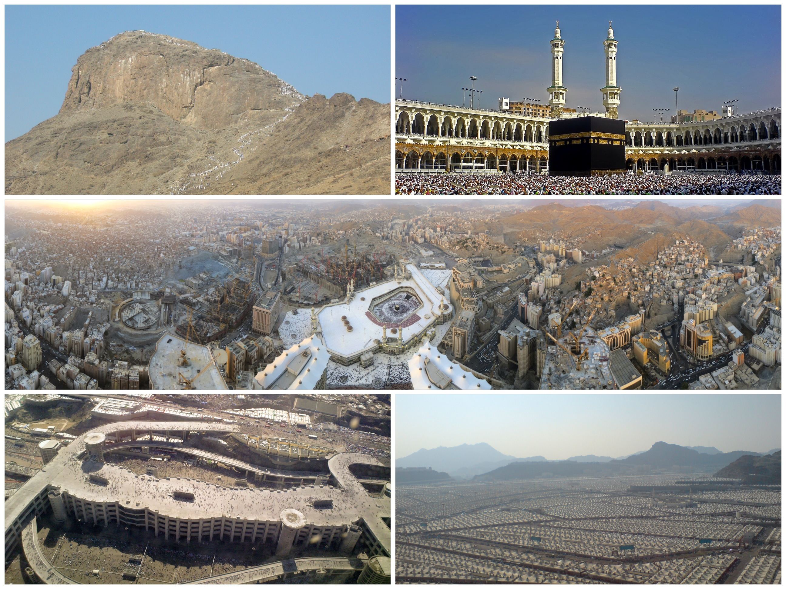

La Meca (en árabe, Makka o Makkah) es una ciudad sagrada del islam ubicada en el actual Arabia Saudita.
Es considerada el lugar más sagrado para los musulmanes, por varias razones históricas y religiosas:

Vida en La Meca
La vida en La Meca en tiempos de Mahoma (aproximadamente a finales del siglo VI y principios del siglo VII d.C.) estaba profundamente influida por la cultura tribal árabe y la religión politeísta.
Nació en La Meca en el año 570 d.C.Pertenecía al clan de los Hashim, parte de la tribu de Quraysh, una de las más influyentes.Quedó huérfano desde muy joven: perdió a su padre antes de nacer y a su madre a los 6 años.
Juventud y reputación:Criado por su abuelo y luego por su tío Abu Talib.Trabajó como pastor y comerciante, ganando fama por su honestidad y rectitud (era apodado Al-Amín, “el confiable”).
A los 25 años se casó con Jadiya, una rica comerciante viuda, 15 años mayor que él. Este matrimonio le dio estabilidad económica y emocional.
Tuvieron varios hijos, aunque solo su hija Fátima sobrevivió a la infancia.
La Meca era un centro comercial y religioso, dominado por la idolatría y el paganismo.
Mahoma se mostraba crítico con la injusticia social, la corrupción y la idolatría.
Solía retirarse a meditar en la Cueva de Hira, donde más tarde recibiría la primera revelación.
En resumen, Mahoma vivió en una sociedad politeísta, con fuertes desigualdades sociales, y desde joven destacó por su carácter justo, reflexivo y moralmente íntegro.
La Meca antes del Islam la Meca era una ciudad muy importante debido a su ubicación en rutas comerciales y a la presencia de la Kaaba, un santuario que atraía a peregrinos de toda Arabia. Era un centro de culto politeísta, donde se veneraban numerosos ídolos.
La sociedad era tribal y patriarcal. Las lealtades familiares eran fundamentales, y los clanes tenían mucha influencia.
Aunque algunos clanes, como los Quraysh, eran poderosos y ricos, había mucha desigualdad. Los pobres, huérfanos y esclavos vivían en condiciones difícile.